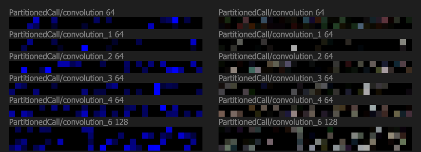
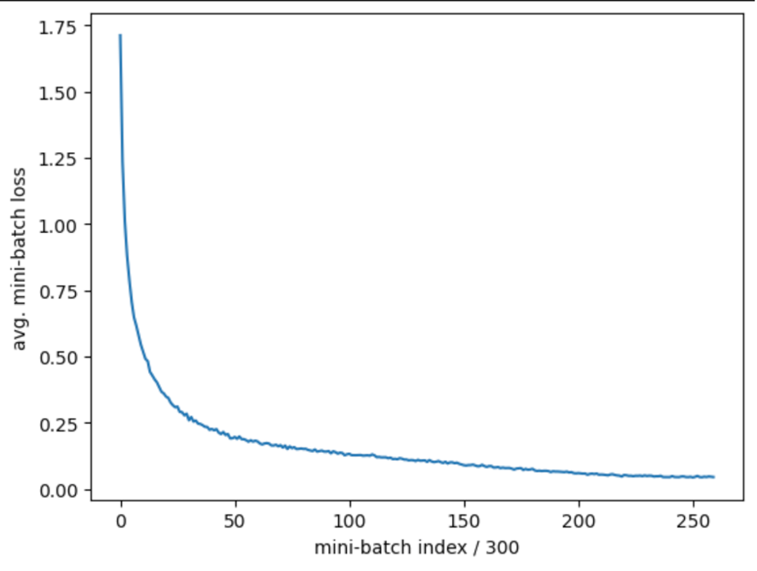

Using web-based technology, this project visualizes the internal activation pattern of ResNet18 on the CIFAR10 dataset. The visualization tries to show whether those kernels in convolutional layers tend to specialize to a certain class, and from a higher level, whether exists an internal activation pattern regarding a specific class. If the pattern exists, it can be useful to reveal how the internal pattern allows the model to learn the underlying structure of the data. This project also compares the performance of TensorFlow and PyTorch, and explore how the different default setting affects the training process, as a preliminary step for the visualization.
Online-demo: https://xiaonanfu-ucsd.github.io/resnet-visualization/
Many studies in the field of Neuroscience already revealed that neurons can have specialized functions (Burke, 1978; Yrttiaho, 2022). For example, some neurons are active with the stimuli of face image; some neurons are active with certain sounds. It is very intuitive to think that artificial neural networks will have similar characteristics, showing a pattern with certain inputs. Is this impression correct? People may feel unsure about the question because this concept is not easy to be verified, and they can only depend on prior knowledge. In many cases, deep learning models are black boxes and it is impossible to let researchers see those computational details. Despite directly reading the model being unachievable, a model can still be visualized somehow, to concentrate the important information to make anyone can form a general idea about how the model works.
Based on the conceptual knowledge of modern deep learning and neuroscience, this project examines whether an artificial neural network, in this case, the CNN, will show a clear preference and internal pattern with respect to certain classes.
Hypothetically, if a pair of images is belong to the same class, such as two dog pictures, the internal pattern of the model should be similar. From another way to understand it, two embedding vectors that represent the similar meaning, will be close to each other, and have a bigger dot product.
In this project, I successfully trained a ResNet18 model on the CIFAR10 dataset, and used front-end technology (i.e. HTML, CSS, JavaScript) to visualize the averaged activation status of the feature maps produced by CNN kernels. CNN is already a mature solution and used in many tasks; more importantly, the inner state of CNN is relatively easier to interpret if we understand it as a filter, compared with MLP and RNN. Although the training process is not the focus of this project, I still want to talk about it because I trained on both TensorFlow and PyTorch, and realized the big gap between them, regarding performance and ease of use. The methodology for ResNet visualization is using bright or dark colors to represent the activation status of a feature map, and using RGB to represent what class the model is processing. If a feature map is only associated with one class, the color will be pure and strong. Using this approach, it is easy to see which kernel’s output is most influential to the final result.
Resnet 18 is the simplest version of Resnet but has similar performance as Resnet with more layers, at least on the CIFAR10 dataset (He et al., 2016). the model is constructed with 4 ResNet layers, totally including about 18 convolutional kernels. Along the process, the size of the feature map gets smaller because the stride is 2, but using more kernels to form more channels. It is a pretty reasonable design: a wider network is less efficient than a deeper network if they have the same number of parameters.
Obviously, training a model is much more than architecture design. By comparing TensorFlow and PyTorch, I found that with the same structure, PyTorch achieved 94% accuracy on testset without rigorous fine-tuning and complex data augmentation, while TensorFlow only achieved 84%, then stranded in some local minimum which brings the accuracy down to 70%. The two platforms are using different default settings. For example, PyTorch uses He initialization, while TensorFlow uses Xavier initialization. The momentum of batchnorm layer is 0.1 in PyTorch, and 0.99 in TensorFlow. However, even if I make their setting as close as possible, TensorFlow still faces the severe problem of overfitting or underfitting. It forces me to train on PyTorch and migrate the model to TensorFlow. It is risky because some toolchains are no longer actively maintained. TensorFlow is necessary for this project since it is the only mainstream platform that can be deployed on the web, and also provides low-level detail such as the output and parameters of each layer.
The goal of this visualization is to show the internal pattern of the model, and the graph should be easy to compare with other states. It is changeling to convert a 3D process to 1D representation (from WHC to C only); some information must be sacrificed. The channel-wise relationships are more important than spatial relationships, because one kernel only produces one feature map, but on the spatial dimension, summing up along HW axis will include other kernels’ contributions. It is not favorable for understanding the actual usage of kernels in a model.
To make the color stand out, there is normalization to compress the range of activation status. The normalization is done on each channel, similar to the steps calculating z-score. Besides, they are set to 0 if they are negative numbers. The reason is the output of the Conv2D layer does not pass through the activation function yet, so a negative number is possible. If the threshold is more radical, then the graph will be cleaner by ignoring some small values. When the threshold sets to 1, every value lower than 1 becomes a black space, then the graph for each layer shows a clear pattern. After this process, the prominent feature map will be more obvious. That is also the reason why the background is dark grey.
The graph can be compared side by side, or stacked together. The stacked graph is more intuitive to find some node that is active with a specific class. In general, if a node is white or grey, means it does not show a clear preference. If the node is black, means it is not active. The algorism calculating stacked color is very naive, just calculate the average of the color and times 2, because the color channel is usually 0, averaging makes the graph looks dim.
A well-trained model is important for later analysis and visualization. Since the ResNet18 on TensorFlow always shows abnormal testing accuracy, I experimented with different batch size, epochs, learning rate, and optimizers to use. The default setting is to use SGD with 0.9 momentum, 128 batch size, 0.01 learning rate, and 15 epochs. Changing batch size does not have a big impact on the accuracy, but largely affects the training time. A learning rate greater than 0.08 prevents the model from converging. The optimizer has more impact. If using Adam, it stops converging at about 0.3 of loss. Then, the loss became nan. The possible reason is that the denominator of the derivative of cross entropy is too small, and the gradient becomes nan. Nadam also causes nan. 15 epochs are usually good for the CIFAR10 dataset. After 30 epochs, the accuracy may go down.
| Acc. | Batch size | Epochs | LR | Opt. | Data Aug. | Platform |
|---|---|---|---|---|---|---|
| 0.9 | 256 | 30 | 0.01 | SGD | Noise | PT |
| 0.83 | 256 | 8 | 0.01 | SGD | Noise | TF |
| 0.78 | 256 | 14 | 0.01 | SGD | Noise | TF |
| 0.66 | 256 | 20 | 0.01 | SGD | Noise | TF |
| 0.88 | 512 | 15 | 0.008 | SGD | Noise | PT |
| Nan | 128 | 15 | 0.001 | Adam | None | PT |

An implementation of ResNet18 from this repository shows a way to use a large epoch number to achieve good performance (Kuangliu, 2019). In Kuangliu’s implementation, there is a CosineAnnealingLR learning rate schedular. With dynamic learning rate, the training process can run for 200 epochs without a performance drop. The final accuracy is about 0.94.
The activation graph for each layer shows that for the input from a specific class, some kernels tend to output an active feature map, and some kernels don’t. Red represents car, green represents truck, and blue represents horse. In expectation, horses should have more internal pattern differences in contrast with the other two. The graph in the top few layers has a very similar pattern, even with input from different classes (Figure 2). One possible thing is that only those highlighted kernels can effectively capture the low-level features. Therefore, I tried to shrink the layer behind the model input, to let it only use 32 of channels. Lastly, accuracy has not decreased, showing that the original model has some redundancy in the first few layers. The visualization graph works for analyzing the model.
Figure 2: Left side is the activation graph with class “horse”; right side is the mix-class activation graph. It conclude the first Conv2D layer, ResNet Layer 1 and 2.
From the stacked graph using mixed class data, the second layer of ResNet18 does not show any clear class-related pattern. The transition convolutional layer between ResNet layers 3 and 4 is irregularly sparse. Maybe it implies that this layer only carries a very small amount of role in classifying. Layer 4 is close to the loss function, it is more likely to show a clear pattern. There are more and more pure color patches in the later layers. The last layer is the clearest. The reason is that the last layer is the output of the model, and the loss function is calculated based on the output. The last convolutional layer has many pure color patches, which means this layer is critical for classifying.
According to the visualization, later layers tend to be more class-related. later layers are the proper area to analyze the internal pattern of the model because the earlier layers are more likely some general-purpose filters. However, by looking side by side, there are only some vague patterns across similar classes (i.e. car and truck). Without any statistical tools, it is hard to tell if the pattern is significant. However, the with-in-class stacked graph shows a clear pattern within the same class. The within-class similarity indicates that indeed class-related internal patterns exist. It is worth mentioning that since the pattern is meaningless for humans, even though most people can notice there is a within-class pattern, it is not explainable.
To answer the hypothesis that whether the CNN node has a clear preference and overall pattern, the response can be yes, but it is quite limited toward the output side of the model. The mixed-class stacked graph shows that the later layers’ nodes tend to have a clear preference. Also, the input from the same class tends to have a similar internal pattern. However, for the cross-class situation, even if the two class has a similar category, it is still hard to eye-balling tell if there is a pattern. There can be one explanation. Due to the one-hot encoding strategy as the label, the model cannot capture those subtle similarities between the two classes. In an end-to-end model, the model may have a larger chance to have a more context-related pattern, rather than just constrained by the label.